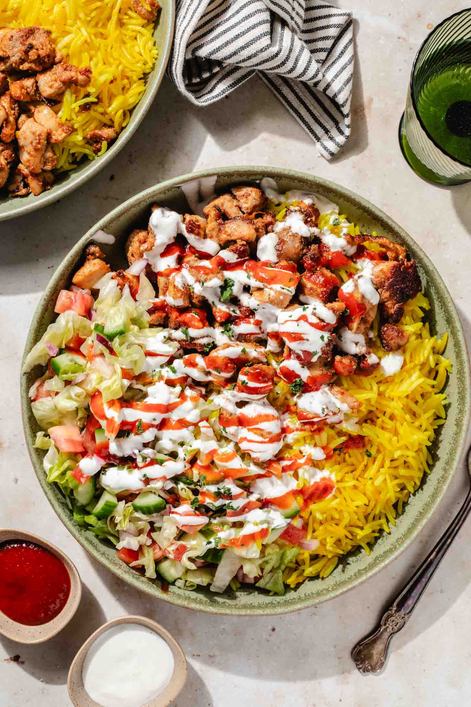

Halal Chicken over Rice

Description
Homemade version of halal cart chicken over rice
Ingredients
- Boneless Chicken Thighs
- Spices
- Garlic
- Salt
- Tumeric
- Olive oil
- Vinegar
- Cucumber
- Onion
- Tomato
- Lettuce
- Broth
Steps
- Cut chicken thighs into small pieces and marinate with spices,
olive oil, and vinegar. Leave covered in fridge over night or at least
half an hour
- Cook rice. Heat oil in a pan or pot, add cinnamon, tumeric, and cardamom.
Cook for 20 seconds then add rice and stir. Add broth and bring to simmer.
Once simmering, cover with lid and cook for 20 minutes undisturbed. Fluff with fork
and set aside
-
While rice cooks, work on cicken. Use a very hot pan on medium high heat and cook
for 3 to 4 mins each side. Do in batches so chicken can develop colour and does not end up
steaming.
-
Chop the vegetables and dress them in olive oil, lemon juice, salt and pepper.
- Plate yellow rice, top it with chicken, add salad on the side, and drizzle the Plate
with white sauce and hot sauce.
Home